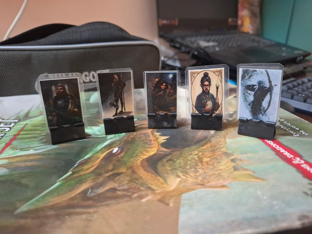
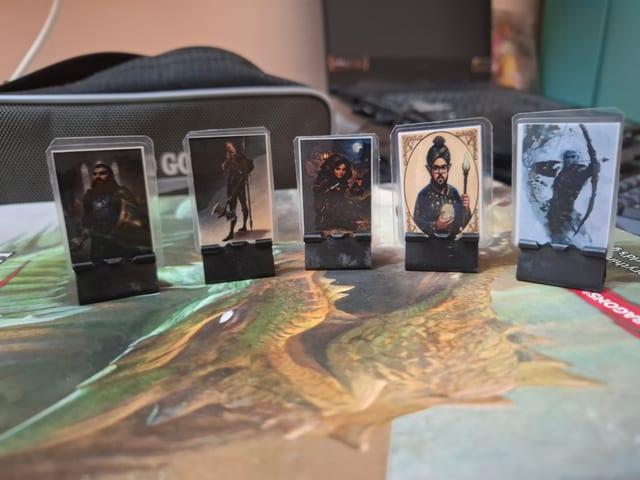
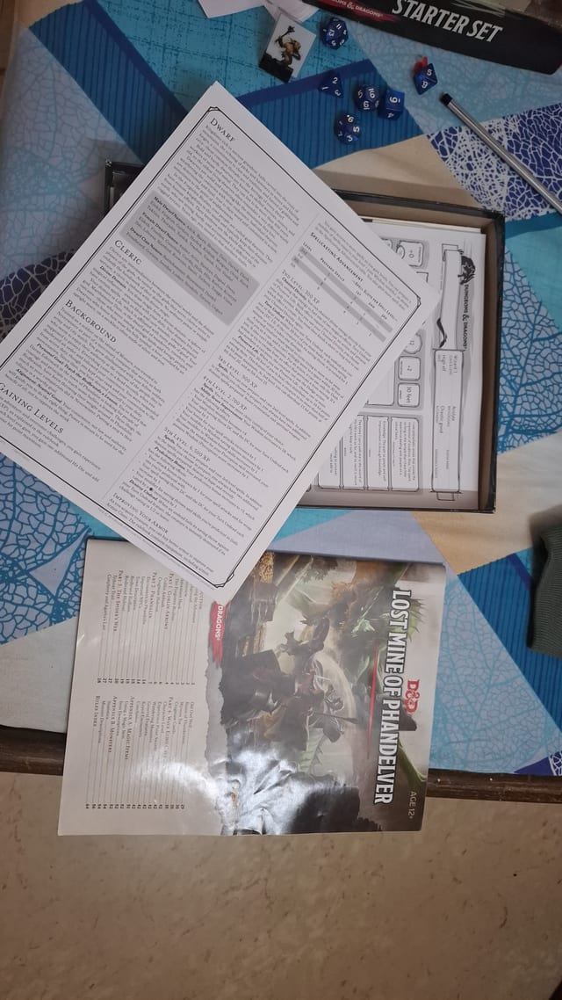
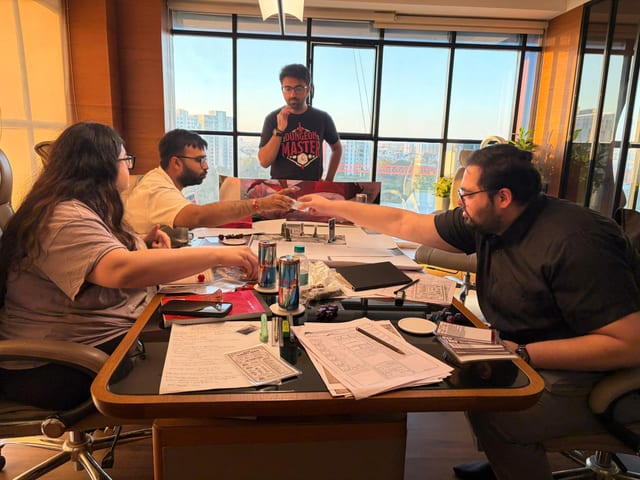
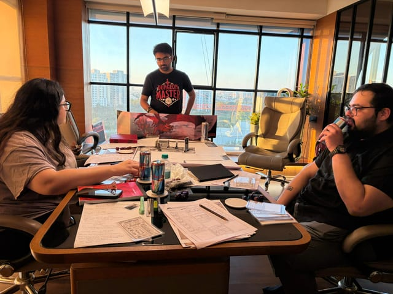
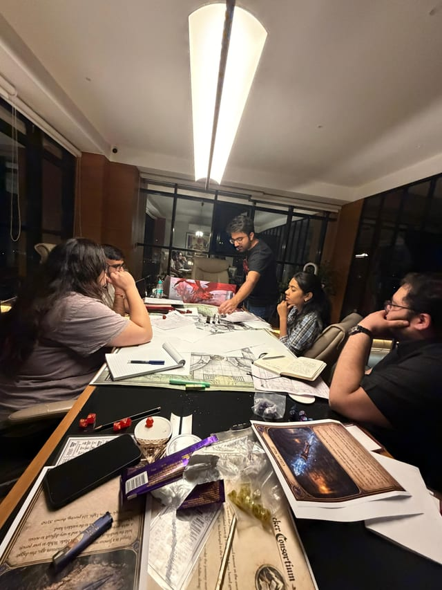
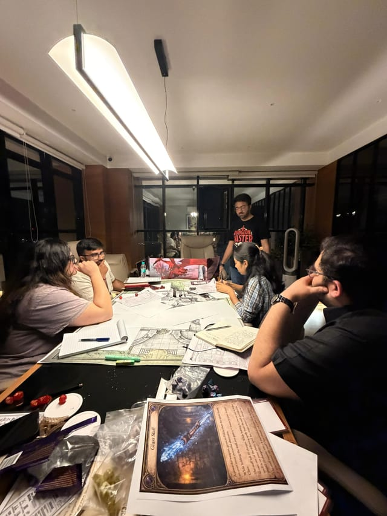
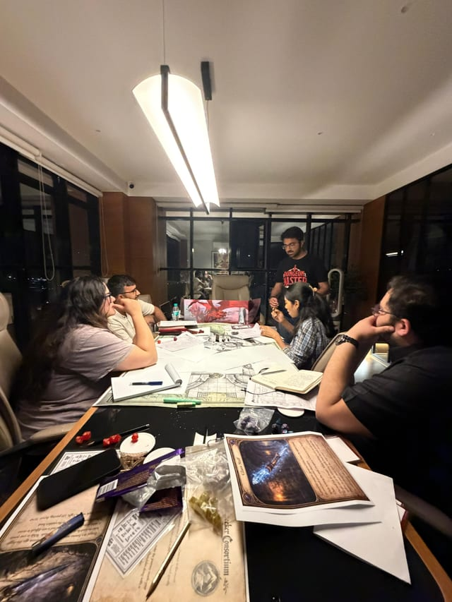

January 2026 · Around the table
Gallery
Photo Archive
The Visual Archive
The maps, the company, and the people who brought the story to life.
















Select a photograph to look closer. The memories continue beyond the page.